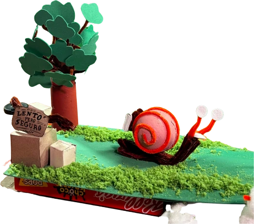
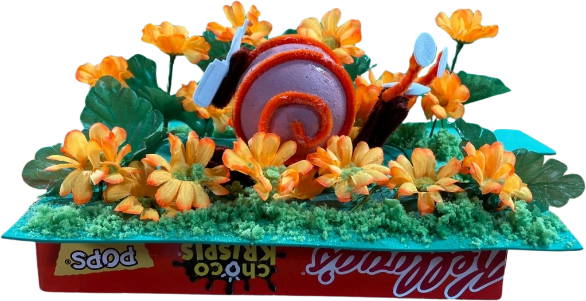
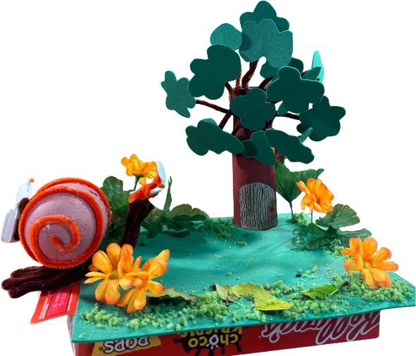
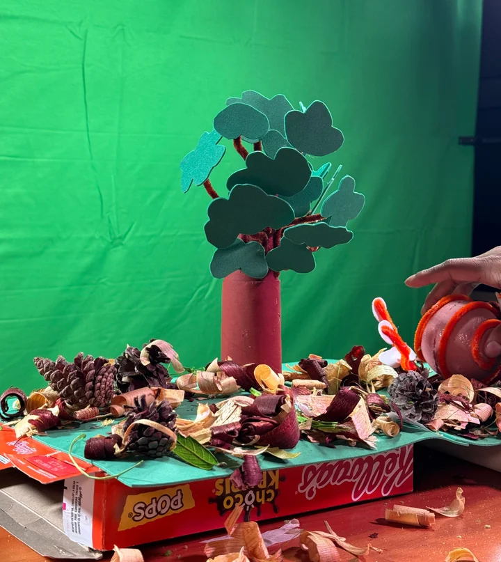

The story of a mail-carrier snail, sure he'll deliver his letters without a hitch — until he realizes the road will be long.

The opening set
The flower field
The tree house
Making it, mid-shootA short film made together by the three of us. We shared out every stage, and each of us contributed to every part of the film.